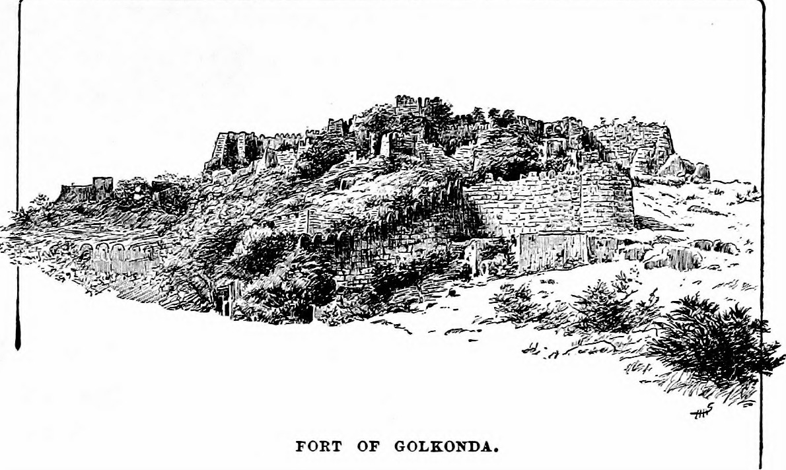

How to reach Golkonda Fort

By Air -
Hyderabad International Airport is 20km away from Hyderabad and is well connected to Indian cities and other countries. Rajiv Gandhi terminal is the international terminal while NT Rama Rao terminal is the domestic terminal. Most of the Indian cities are connected from Hyderabad through air. Besides this, foreign cities like Jeddah, Dammam, Kuala Lumpur, Singapore, etc. are also connected with Hyderabad.
✈️Click here to know more
By Rail -
There are three major railway stations of Hyderabad which are Secunderabad, Hyderabad, and Kacheguda. All these stations are well-connected to many cities all over India. Rajdhani, shatabdi, duronto, double decker, superfast, mail, express and passenger trains connect Hyderabad to various cities.
🚆Click here to know more
Local Transport-
People can move around Hyderabad through various modes of local transport like local trains, local buses, autos, and taxis. As the need of transport is increasing, the city suffers from traffic congestion which leads to traffic jams. New flyovers have been made and now metro rail is also under development which may reduce the congestion up to some extent.
🚖 Click here to know more
.
Explore Golconda Fort!

Places to eat
|

About Golconda Fort |

Things to do |

History |

Best time to visit |